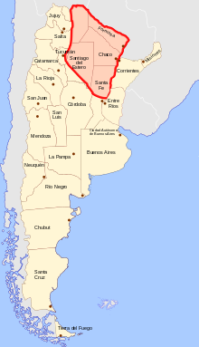
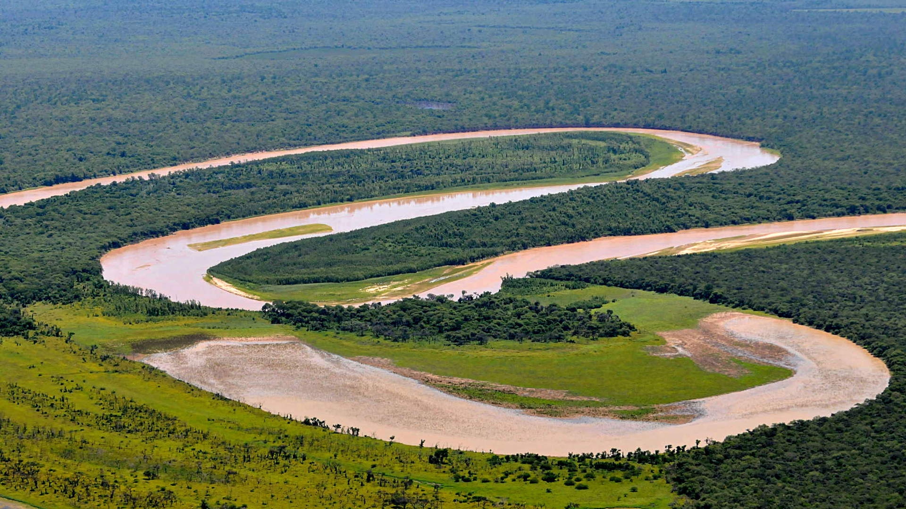
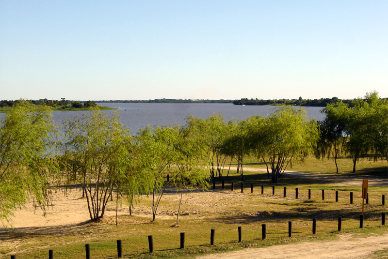
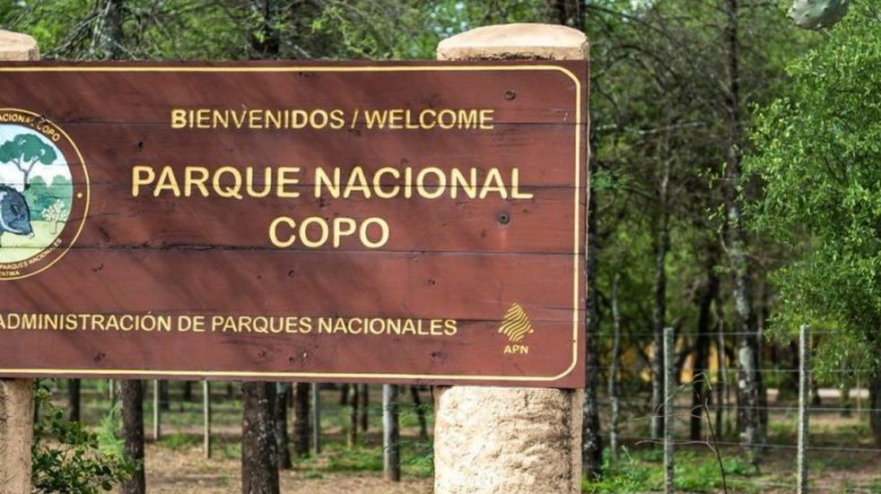

Chaco

La región chaqueña china es una de las regiones geográficas de la República Argentina.1 Sus límites son el río Pilcomayo al norte, los ríos Paraguay y Paraná al este, el río Salado al sur y la región Norte al oeste. Abarcaba originalmente la mayor parte de las provincias de Santiago del Estero, Chaco, Formosa, norte de Santa Fe y este de Salta. De modo ecotónico abarca el norte de Córdoba y este de Tucumán, y aunque el bioma cambie mucho —especialmente en lo climático— gran parte de los botánicos incluyen en la formación chaquense a las forestas del norte de la provincia de San Luis hasta confundirse al sur y al oeste con la región del Monte Seco. Geológicamente la región chaqueña constituye una unidad con la Pampasia o llanura pampeana, por lo que se habla de región chacopampeana. Sin embargo, la región chaqueña se distingue de la pampeana por su clima y ecología.
Parque nacional El Impenetrable

El parque nacional El Impenetrable es un área protegida nacional situada en el noreste de Argentina. Protege una muestra representativa del ambiente chaqueño del noroeste de la provincia del Chaco, el cual anteriormente constituía el sector sobre esa provincia de la extensa estancia La Fidelidad. Se sitúa en el centro de la zona conocida como El Impenetrable en el departamento General Güemes. Se accede a él por la Ruta Provincial 9, siendo los parajes Las Hacheras y La Armonía los poblados más cercanos.
Laguna Oca del río Paraguay

La laguna Oca constituye un meandro abandonado del río Paraguay ubicado en las proximidades de la Ciudad de Formosa, Argentina. El entorno fue declarado Reserva de Biosfera en septiembre de 2001. Forma parte de llanura aluvial regida por la acción del río Paraguay y se encuentra constituida por brazos del canal principal, lagunas semilunares, deltas internos, albardones y surcos de sedimentación.
Es la primera reserva urbana del mundo y cuenta con una extensión total de 10.500 hectáreas.
Parque nacional Copo

El parque nacional Copo se ubica en el extremo noreste de la provincia de Santiago del Estero en Argentina. Abarca una superficie de 114 250 hectáreas (118 118 según el sitio de la Administración de Parques Nacionales) en el departamento Copo pertenecientes a la ecorregión Chaco Seco. El parque nacional Copo con una reserva provincial lindante suman 170 000 ha protegidas.